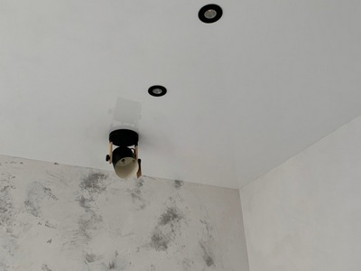
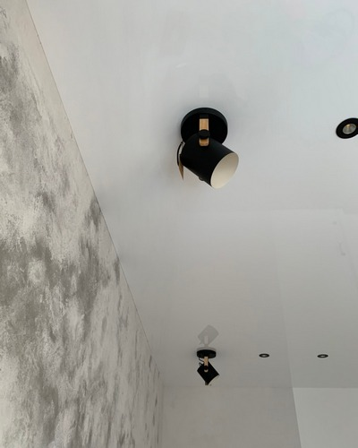
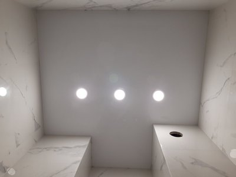

Бесщелевой натяжной потолок от компании Nova Stelya

Прежде, чем говорить, что такое бесщелевой натяжной потолок, выясним, почему они возникли. Профессионально выполненный натяжной потолок производит сильное впечатление – идеально ровная поверхность, насыщенный цвет без разводов, потеков. Но в любом случае взгляд упирается в стык потолка и стены. И здесь гармония несколько нарушается. Видна полоска между натяжным полотном и стеной. Это декоративная вставка, которая закрывает паз (щель), через который полотно заводится в багет и там фиксируется. Он небольшой 5-6 мм, но он ест. Некоторые пытаются его замаскировать, подбирают вставку под цвет полотна. Другие наоборот, его выделяют, подчеркивая стык, например, при помощи декоративного шнура.
Бесщелевой натяжной потолок решает эту проблему кардинально. В нем нет щели, куда необходимо заводить полотно. Точнее эта щель в багете есть, но она закрыта самим полотном.
Цены на бесщелевой натяжной потолок в Киеве
| ✅ Бесщелевой потолок в коридор: | от 3000 грн. |
| ✅ Бесщелевой потолок на кухню: | от 5400 грн. |
| ✅ Бесщелевой потолок в спальню: | от 8100 грн. |
| ✅ Бесщелевой потолок в гостиную: | от 9000 грн. |
Конструкция бесщелевого натяжного потолка

Для создания бесщелевого натяжного потолка используется специальный алюминиевый профиль Kraab 3.0 и упругий прижимной шнур. Принцип действия такого профиля показан на рисунке. Натяжное полотно заводится в щель и ее собой же закрывает. Для плотной фиксации полотна к стене используется прижимной шнур. Для соединения полотна с профилем используется гарпунный метод. То есть бесщелевая технология является разновидностью гарпунного способа. Профиль Kraab 3.0 позволяет использовать прижимной шнур в двух положениях, которые зависят от свойств полотна.
Преимущества бесщелевого натяжного потолка
Потолок имеет аккуратный законченный вид. Есть две плоскости - потолка и стены. Без всяких вставок и шнуров. Особенно такая технология выигрывает в многоуровневых натяжных конструкциях, где полотно необходимо стыковать не только со стенами, но и гипсокартонными вставками. Применение в этом случае декоративных вставок неоправданно загромождает конструкцию. По сути, бесщелевая технология уничтожила последнее преимущество гипсокартонного потолка перед натяжным. У первого всегда есть четка граница между гипсокартонной плитой и стеной. Теперь такая граница есть и у натяжного потолка. Это увеличивает его привлекательность и дает дополнительные инструменты для дизайнеров.
Недостатки бесщелевого натяжного потолка
- Для такой технологии необходимы ровные стены. При наличии кривизны возможно неплотное прилегание полотна и, как следствие, появление зазора. Но упругость прижимного шнура позволяет наличие небольшой кривизны стен.
- Более сложный монтаж. При гарпунном способе полотно в паз профиля заводится специальным инструментом – мягким шпателем, в бесщелевом варианте – полотно заводится вручную. Необходима более высокая квалификация исполнителей. Поэтому в Киеве далеко не все компании, работающие в этом сегменте услуг, устанавливают бесщелевые натяжные потолки. Одна из этих немногих компаний - Nova Stelya.
Технология установки бесщелевого натяжного потолка компанией Nova Stelya

- Вызов замерщика (бесплатно). Наш специалист тщательно лазерной рулеткой выполнит все необходимые замеры, покажет каталог натяжных потолков, чтобы вы могли выбрать понравившийся. Запишет все ваши требования по количеству точечных светильников и т.д.
- Если вы заказали многоуровневую конструкцию, то наши дизайнеры выполнят 3D проект, чтобы вы могли наглядно увидеть, что будет в итоге.
- По выполненным замерам и проекту выкраиваются полотна с учетом установки их гарпунным способом. К ним по периметру приваривается кайма с зацепом по краю.
- Материалы и необходимые инструменты завозятся на объект. В помещении, где будет производиться установка, необходимо обеспечить доступ к стенам (достаточно отодвинуть от них мебель на метр, закрывать ее пленкой нет необходимости, пыли не будет). Должны быть вынесены комнатные цветы и животные.
- Наши специалисты выполняют разметку и по ней вешают на стены алюминиевый профиль Kraab 3.0. На месте, где должна быть люстра, ставят закладные. Отверстия для крепежа выполняются дрелью с заборником пыли. К месту установки точечных светильников подводятся провода и закрепляются на базовом потолке. Если это предусмотрено, устанавливаются гипсокартонные вставки.
- Полотно при помощи тепловой пушки разогревают до 700С и заводят вручную в профиль, фиксируя его зацепом и прижимая к стене прижимным шнуром.
- В случае криволинейных участков (например, выполнение овала в двухуровневой конструкции), профиль Kraab 3.0 надрезается с шагом 5-10 мм и выгибается в нужный контур.
- Устанавливаемся светильник.
Преимущества компании Nova Stelya
- Мы одни из немногих компаний в Киеве, которые выполняют установку бесщелевых натяжных потолков.
- Работаем только с сертифицированной, экологически безопасной продукцией.
- С клиентом заключаем договор и предоставляем 12-летнюю гарантию на свою работу.
- Предлагаем выгодные цены.
Вместо заключения: 10 причин выбрать бесщелевые натяжные потолки от компании Nova Stelya
- Эстетичность
Это первая и главная причина, по которой выбирают натяжные потолки. На стыке полотна и стены только красивый, ровный зазор с тенью, поэтому такие потолки еще называют «теневые».
- Разнообразие вариантов дизайна
Особенно такая система актуальна, когда необходимо в дизайне подчеркнуть разницу между цветом и фактурой стен и потолка. Раньше приходилось мучаться, подбирать вставку подходящего цвета, некоторые умельцы даже красили декоративные ленты, чтобы они точно совпадали по цвету. Теперь эти проблемы позади – просто аккуратный стык стены и потолка.
- Простота демонтажа
С системой «краб» снять полотно с конструкции натяжного потолка легче и быстрее. Нет необходимости сначала удалять декоративную вставку, затем уже снимать полотно. То же самое при повторном монтаже. Он также значительно упрощается.
- Аккуратность углов и обводов
То, как выглядит система натяжного потолка в углу, вокруг колонны, трубы или вентиляционной решетки, напрямую зависит от мастерства и аккуратности специалиста по установке. В бесщелевом варианте все обводы будут выглядеть идеально по двум причинам. Во-первых, их устанавливают профессионалы из компании Nova Stelya. Во-вторых – тут нет необходимости использовать маскирующие детали, чтобы скрыть край полотна.
- Надежная изоляция верхней части комнаты
Многие клиенты задают вопрос, а также надежно защищают бесщелевые потолки от затопления. Их обеспокоенность понятна, ведь зазор между стеной и потолков все же есть. Но он только видимый, а не конструктивный. Это значит, что верх комнаты также надежно изолирован, как и стандартная система.
- Теплоизоляция
В сегодняшних условиях – это очень важная причина, чтобы установить натяжной потолок, особенно жителям верхних этажей и частных домов. ПВХ-полотно позволяет не отапливать чердак или не выпускать драгоценное тепло через крышу, а сохранить его в жилом помещении. Теперь преимущества установки бесщелевых натяжных потолков очевидно. Поэтому если вы уже приняли решение в пользу этой технологии, связывайтесь с менеджерами компании Nova Stelya для вызова специалиста для замеров.
Наиболее часто задаваемые вопросы по бесщелевым натяжным потолкам
🤗 Вы устанавливаете тканевые бесщелевые натяжные потолки?
На настоящий момент тканевые потолки не устанавливаются бесщелевым способом.
🤗 Можно ли установить бесщелевой натяжной потолок «Звездное небо»?
Бесщелевой потолок – это способ соединения полотна со стеной. Его можно использовать для всех пленочных потолков, за исключением разве что «парящих» и теневых натяжных потолков.
🤗 Какова цена бесщелевого натяжного потолка?
На цену влияет множество факторов – используемое полотно, особенности помещения (количество стояков, наличие кондиционера и т.д.), количество устанавливаемых точечных светильников. Ориентировочно – 300-500 грн/м2. Например, цена для помещения площадью 15 м2 с использованием полотна MSD Premium составляет 7000 грн.
🤗 Можно ли снять при необходимости бесщелевой натяжной потолок, а затем вновь его установить?
Да, специалисты Nova Stelya аккуратно снимут потолок, а затем вновь установят без всяких повреждений.
🤗 Как быстро устанавливается бесащелевой натяжной потолок?
Специалисты компании Nova Stelya устанавливают одноуровневый бесщелевой потолок в стандартном помещении за 3-4 часа. На обычную квартиру уходит один день.
🤗 Может ли бесщелевой натяжной потолок защитить от затопления?
Может. Технология исключает подтекание воды через щель между стеной и полотном. Наши мастера сольют воду и установят полотно обратно, без изменения внешнего вида.
🤗 Можно ли у вас заказать проект бесщелевого натяжного потолка для квартиры?
Да. В штате нашей компании есть дизайнеры, которые разработают проект согласно вашим требованиям и пожеланиям. Мы воплощаем в жизнь самые разные по сложности дизайны.